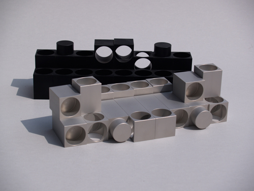

interaktion

Interaktion ist ein Spiel im Spiel bei dem der reale Raum zum Spielfeld wird: ein Schachspiel.
Hier ist es ein Spiel mit Raumkörpern, Hohlräumen und Zwischenräumen in einer unüberschaubar
großen Anzahl von möglichen Kombinationen. Was bedeuten Regeln im Spiel und in der Kunst?
Bedeuten sie eine Beschränkung oder eröffnen sie nicht auch Möglichkeitsräume? Wo befinden wir
uns in den unterschiedlichen Konstellationen? Wie wirken sie auf uns? Gelingt es uns, sie als
Bild zu betrachten oder vielleicht sogar anzuordnen? Welche Strategien wenden wir an?
werk
In einem Schachspiel agieren die Figuren miteinander und bilden unterschiedliche Formationen. Du musst kein
Schachspieler sein oder die Spielregeln kennen, um dieses Werk von Jo Enzweiler zu verstehen. Betrachte es
einfach als mehrteiliges, bewegliches Objekt.
Jo Enzweiler entwickelt 1959 aus Holz einen Prototypen für ein Schachspiel, das er später in in Aluminium fertigen lässt. Das Spiel setzt sich aus 16 hellen und 16 dunklen Steinen zusammen. Alle Figuren zeigen die Grundformen Rechteck, Quadrat und Kreis. Es ist erstaunlich wie unterschiedlich sie trotzdem sind.
Jede der Figuren ist eine kleine Plastik für sich, du kannst sie in die Hand nehmen, von allen Seiten betrachten, aufstellen oder hinlegen. Du kannst zwei, drei, vier oder alle kleinen Objekte neben-, über- oder wild durcheinander stellen oder legen. Vielleicht gruppierst du die Objekte so dicht, dass sie als geschlossene Gesamtform im Raum stehen. Oder du spielst das Motiv der Öffnung aus und beziehst den Umraum mit ein.
Als Spielobjekt kommen die Figuren in einem eigens dafür angefertigten Kästchen, das wie ein Setzkasten funktioniert. So entstehen auch beim Ein- und Ausräumen immer neue Bilder. Das Spielobjekt, so sagt Jo Enzweiler, erfüllt die Funktion eines Spiels und wird beim Spielen durch die Ideen und Bewegungen der Spieler zum Kunstobjekt. Dabei geht es um Kombinatorik, d.h. um ein Ausspielen von Möglichkeiten. Aus der Beschränkung auf einfache Formen entsteht – mit oder ohne Spielregeln – eine große Vielfalt, unzählige Bilder, unzählige räumliche Formationen… Hast du ein Spiel schon mal als Bild betrachtet?
Jo Enzweiler entwickelt 1959 aus Holz einen Prototypen für ein Schachspiel, das er später in in Aluminium fertigen lässt. Das Spiel setzt sich aus 16 hellen und 16 dunklen Steinen zusammen. Alle Figuren zeigen die Grundformen Rechteck, Quadrat und Kreis. Es ist erstaunlich wie unterschiedlich sie trotzdem sind.
Jede der Figuren ist eine kleine Plastik für sich, du kannst sie in die Hand nehmen, von allen Seiten betrachten, aufstellen oder hinlegen. Du kannst zwei, drei, vier oder alle kleinen Objekte neben-, über- oder wild durcheinander stellen oder legen. Vielleicht gruppierst du die Objekte so dicht, dass sie als geschlossene Gesamtform im Raum stehen. Oder du spielst das Motiv der Öffnung aus und beziehst den Umraum mit ein.
Als Spielobjekt kommen die Figuren in einem eigens dafür angefertigten Kästchen, das wie ein Setzkasten funktioniert. So entstehen auch beim Ein- und Ausräumen immer neue Bilder. Das Spielobjekt, so sagt Jo Enzweiler, erfüllt die Funktion eines Spiels und wird beim Spielen durch die Ideen und Bewegungen der Spieler zum Kunstobjekt. Dabei geht es um Kombinatorik, d.h. um ein Ausspielen von Möglichkeiten. Aus der Beschränkung auf einfache Formen entsteht – mit oder ohne Spielregeln – eine große Vielfalt, unzählige Bilder, unzählige räumliche Formationen… Hast du ein Spiel schon mal als Bild betrachtet?

Schachspiel Serienproduktion, Aluminium, massiv, schwarz oder
weiß lackiert, 10 × 22 × 16 cm, Auflage 50 Expemplare (Fotos: Jo Enzweiler)
galerie